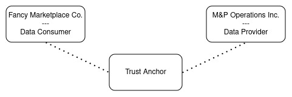
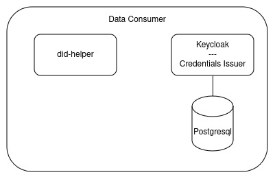
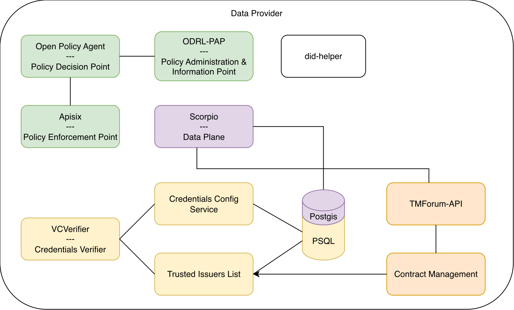

Local Deployment¶
In order to support development and exploration of the FIWARE Data Space Connector, a "Minimum Viable Dataspace" is provided as part of this repo. An alternative deployment guide, based on MicroK8s can be found here: https://github.com/cgonzalezITA/DSFiware-hackathon?tab=readme-ov-file#quick-deployment-from-scratch
Note
The Local Deployment is for learning and development purposes only. It deploys all the components of a data space together to show how they interact, not from the perspective of any specific role. For deploying the FIWARE DSC in a real environment, refer to the documentation that matches your organization's role in the data space: Deployment by Role.
Requirements¶
Since the local deployment installs 2 connector instances and a trust-anchor, its recommended to use a strong enough machine. While 16Gb Ram might be enough, its recommended to have >24Gb available. The Cluster Prerequisites give the resources each role uses. The deployment is build and tested on Ubuntu, most other Linux distributions should work as well.
The local deployment tries to be as decoupled from the host system as possible to reduce the amount of requirements but stills needs the following programs:
Helm does not need to be installed: the build downloads the version it deploys with.
In order to interact with the system, the following tools are also helpful:
To check your machine before the first deployment, execute the prepared script (./doc/deployment-integration/local-deployment/checkRequirements.sh from the repository root). It supports Bash 3.2 or later on macOS and Linux.
Missing, outdated or unusable required tools (Docker, kubectl, Maven, java and javac), or an unreachable Docker engine, produce exit status 1. The script also warns, without failing, when:
- an interaction tool (curl, jq or yq) is missing or outdated;
- the Docker engine has less than 24 GB of memory or a single CPU (on macOS, Docker's VM);
- a port the cluster publishes on the host (8080, 8443, 8888 or 6443) is already in use;
*.127.0.0.1.nip.iodoes not resolve to127.0.0.1, as with resolvers that block answers pointing to local addresses.
The script does not create a Kubernetes cluster or verify deployment readiness.
Quick Start¶
Warning
The local deployment uses k3s in a docker container and is currently only tested on linux and MacOS.
Warning
On Linux hosts, k3s networking needs the br_netfilter kernel module, which current distributions do not load by default. Without it, the connector does not start up properly. Enable it with sudo modprobe br_netfilter. It is not needed on macOS, where Docker runs in its own Linux VM. See Stackoverflow for more.
To start the Data Space, just use:
Depending on the machine, it should take between 5 and 10min to spin up the complete data space. You can connect to the running k3s-cluster via:
export KUBECONFIG=$(pwd)/target/k3s.yaml
# get all deployed resources
kubectl get all --all-namespaces
The Data Space¶

The locally deployed Data Space consists of 2 Participants, connected through a Trust Anchor.
The Trust Anchor¶
Every Data Spaces requires a framework that ensures trust between the participants. Depending on the requirements of the concrete Data Space, this can become a rather complex topic. Various trust-providers exist( f.e. Gaia-X Digital Clearing Houses) and could be reused(see Gaia-X for more information). The default setup of the connector requires an EBSI-Trusted Issuers Registry to provide the list of participants.
The local Data Spaces comes with the FIWARE Trusted Issuers List as a
rather simple implementation of that API, providing CRUD functionality
for Issuers and storage in a PSQL Database. After deployment, the API is available
at http://tir.127.0.0.1.nip.io:8080. Both participants
are automatically registered as "Trusted Issuers" in the registry with their did's.
Get a list of the issuers:
A new issuer could for example be registered via:
curl -k -x localhost:8888 -X POST https://til.127.0.0.1.nip.io/issuer \
--header 'Content-Type: application/json' \
--data '{
"did": "did:key:myKey",
"credentials": []
}' | jq .
For more information about the API, see its OpenAPI Spec
The Participants¶
The Minimum Data Space should provide an easy-to-understand introduction to the FIWARE Data Space. Therefor the roles of the participants are clearly seperated into "Data Consumer" and "Data Provider". However, in most real-world Data Spaces the participants will have both roles. They are not restricted to either consume or provide.
In our scenario, the Data Provider(M&P Operations Inc.) is a company offering solutions to host and operate digital
services for other companies. The Data Consumer(Fancy Marketplace Co.)
provides an online shop, offering various products. To fulfill their roles, they need different
components of the FIWARE Data Space Connector.
The Data Consumer¶

Since the Data Consumer in our example is only retrieving data, it requires very few components:
- Keycloak - to issue VerifiableCredentials
- did-helper - a small helper application, providing the decentralized identity to be used for the local Data Space
After deployment, Keycloak can be used to issue VerifiableCredentials for users or services, to be used for authorization at other participants of the Data Space. It comes with 2 preconfigured users:
- the
keycloak-admin- has a password generated during deployment, it can be retrieved viakubectl get secret -n consumer -o json issuance-secret | jq '.data."keycloak-admin"' -r | base64 --decode - the
test-user- it has a fixed password, set to "test"
The admin-console of keycloak is available at: https://keycloak-consumer.127.0.0.1.nip.io:8443, login with
the keycloak-admin
The credentials issuance in the account-console is available
at: https://keycloak-consumer.127.0.0.1.nip.io:8443/realms/test-realm/account/oid4vci, login with the test-user
In order to retrieve an actual credential two ways are available:
- Use the account-console and retrieve the credential with a wallet. Currently, we cannot recommend any for a local use case.
- Get the credential via http-requests through the
SameDevice-Flow:
Warning
The pre-authorized code and the offer expire within 30s for security reasons. Be fast.
Tip
In case you did the demo before, you can use the following snippet to unset the env-vars:
Get an AccessToken from Keycloak. This logs in with the password grant, which the local environment turns on for the
account-console client: the chart leaves it off, so outside the local environment a user logs in through the browser
or with a wallet (see Keycloak).
export ACCESS_TOKEN=$(curl -s -k -x localhost:8888 -X POST https://keycloak-consumer.127.0.0.1.nip.io/realms/test-realm/protocol/openid-connect/token \
--header 'Accept: */*' \
--header 'Content-Type: application/x-www-form-urlencoded' \
--data grant_type=password \
--data client_id=account-console \
--data username=employee \
--data scope=openid \
--data password=test | jq '.access_token' -r); echo ${ACCESS_TOKEN}
(Optional, since in the local case we know all of the values in advance) Get the credentials issuer information:
curl -k -x localhost:8888 -X GET https://keycloak-consumer.127.0.0.1.nip.io/realms/test-realm/.well-known/openid-credential-issuer | jq .
Get a credential offer uri(for the `user-credential), using the retrieved AccessToken:
export OFFER_URI=$(curl -s -k -x localhost:8888 -X GET 'https://keycloak-consumer.127.0.0.1.nip.io/realms/test-realm/protocol/oid4vc/create-credential-offer?credential_configuration_id=user-credential&pre_authorized=true' \
--header "Authorization: Bearer ${ACCESS_TOKEN}" | jq '"\(.issuer)/\(.nonce)"' -r); echo ${OFFER_URI}
Use the offer uri(e.g. the issuerand nonce fields), to retrieve the actual offer:
export PRE_AUTHORIZED_CODE=$(curl -s -k -x localhost:8888 -X GET ${OFFER_URI} \
--header "Authorization: Bearer ${ACCESS_TOKEN}" | jq '.grants."urn:ietf:params:oauth:grant-type:pre-authorized_code"."pre-authorized_code"' -r); echo ${PRE_AUTHORIZED_CODE}
Exchange the pre-authorized code from the offer with an AccessToken at the authorization server:
token_response=$(curl -s -k -x localhost:8888 -X POST https://keycloak-consumer.127.0.0.1.nip.io/realms/test-realm/protocol/openid-connect/token \
--header 'Accept: */*' \
--header 'Content-Type: application/x-www-form-urlencoded' \
--data grant_type=urn:ietf:params:oauth:grant-type:pre-authorized_code \
--data pre-authorized_code=${PRE_AUTHORIZED_CODE})
export CREDENTIAL_ACCESS_TOKEN=$(echo $token_response | jq '.access_token' -r); echo ${CREDENTIAL_ACCESS_TOKEN}
export CREDENTIAL_IDENTIFIER=$(echo "${token_response}" | jq -r '
.authorization_details[]? |
select(.credential_identifiers != null and (.credential_identifiers | length) > 0) |
.credential_identifiers[0]' | head -n 1); echo ${CREDENTIAL_IDENTIFIER}
Use the returned access token to get the actual credential:
export VERIFIABLE_CREDENTIAL=$(curl -s -k -x localhost:8888 -X POST https://keycloak-consumer.127.0.0.1.nip.io/realms/test-realm/protocol/oid4vc/credential \
--header 'Accept: */*' \
--header 'Content-Type: application/json' \
--header "Authorization: Bearer ${CREDENTIAL_ACCESS_TOKEN}" \
--data "{
\"credential_identifier\": \"${CREDENTIAL_IDENTIFIER}\"
}" | jq '.credentials[0].credential' -r); echo ${VERIFIABLE_CREDENTIAL}
You will receive a jwt-encoded credential to be used within the data space.
The Data Provider¶

The Data Provider requires a couple of more components, in order to provide secure access to its data. It needs essentially 3 building blocks:
- Data-Service: In our example case, the data is provided by an NGSI-LD Context Broker
- Authentication:
- VCVerifier: Verifies incoming VerifiableCredentials through OID4VP and returns a JWT token
- CredentialsConfigService: Allows to configure the Trusted Lists to be used for certain credentials
- TrustedIssuersList: Allows to specify the capabilities of certain issuers, f.e. what credentials they are allowed to issue
- Authorization:
- Apisix: An Api-Gateway that verifies the incoming JWT(provided by the verifier) and acts as Policy Enforcement Point to authorize requests based on the PDP's decision
- Open Policy Agent: Acts as the Policy Decision Point, to evaluate existing policies for requests and either allows or denies them.
- ODRL-PAP: Policy Administration & Information Point, that allows to configure policies in ODRL and provides them to the Open Policy Agent(translated into rego). It can be used to offer additional infromation to be taken into account.
- Value creation:
- TMForum API: Implementation of the TMForum APIs to provide API's focused for offering, selling and buying data products and services.
- Contract Management: Enables access to services and data when orders happend at the TMForum-API
- did-helper - a small helper application, providing the decentralized identity to be used for the local Data Space
After the deployment, the provider can create a policy to allow access to its data. An example policy can be found in
the test-resources
It allows every participant to access entities of type EnergyReport.
Warning
The PAP and Scorpio APIs are only published to make demo interactions easier. In real environments, they should never be public without any authentication/authorization framework in front of them.
The policy can be created at the PAP via:
curl -k -x localhost:8888 -s -X 'POST' https://pap-provider.127.0.0.1.nip.io/policy \
-H 'Content-Type: application/json' \
-d '{
"@context": {
"dc": "http://purl.org/dc/elements/1.1/",
"dct": "http://purl.org/dc/terms/",
"owl": "http://www.w3.org/2002/07/owl#",
"odrl": "http://www.w3.org/ns/odrl/2/",
"rdfs": "http://www.w3.org/2000/01/rdf-schema#",
"skos": "http://www.w3.org/2004/02/skos/core#"
},
"@id": "https://mp-operation.org/policy/common/test",
"odrl:uid": "https://mp-operation.org/policy/common/test",
"@type": "odrl:Policy",
"odrl:permission": {
"odrl:assigner": {
"@id": "https://www.mp-operation.org/"
},
"odrl:target": {
"@type": "odrl:AssetCollection",
"odrl:source": "urn:asset",
"odrl:refinement": [
{
"@type": "odrl:Constraint",
"odrl:leftOperand": "ngsi-ld:entityType",
"odrl:operator": {
"@id": "odrl:eq"
},
"odrl:rightOperand": "EnergyReport"
}
]
},
"odrl:assignee": {
"@id": "vc:any"
},
"odrl:action": {
"@id": "odrl:read"
}
}
}'
Data can be created through the NGSI-LD API itself. In order to make interaction easier, its directly available through
an ingress at https://scorpio-provider.127.0.0.1.nip.io/ngsi-ld/v1. In
real environments, no endpoint should be publicly available without beeing protected by the authorization framework.
Create an entity via:
curl -k -x localhost:8888 -s -X POST https://scorpio-provider.127.0.0.1.nip.io/ngsi-ld/v1/entities \
-H 'Accept: application/json' \
-H 'Content-Type: application/json' \
-d '{
"id": "urn:ngsi-ld:EnergyReport:fms-1",
"type": "EnergyReport",
"name": {
"type": "Property",
"value": "Standard Server"
},
"consumption": {
"type": "Property",
"value": "94"
}
}'
Demo Interactions¶
Once everything is deployed and configured(e.g. the consumer received a credential - see The Data Consumer - and policy/entity are setup - see The Data Provider) , the consumer can access the data as following:
Authenticate via OID4VP¶
Warning
Those steps assume that interaction with consumer and provider already happend, e.g. a VerifiableCredential is available and policy/entity are created.
The credential needs to be presented for authentication through [OID4VP]((https://openid.net/specs/openid-4-verifiable-presentations-1_0.html). Every required information for that flow can be retrieved via the standard endpoints.
If you try to request the provider api without authentication, you will receive an 401:
curl -k -x localhost:8888 -s -X GET 'https://mp-data-service.127.0.0.1.nip.io/ngsi-ld/v1/entities/urn:ngsi-ld:EnergyReport:fms-1'
The normal flow is now to request the oidc-information at the well-known endpoint:
export TOKEN_ENDPOINT=$(curl -k -x localhost:8888 -s -X GET 'https://mp-data-service.127.0.0.1.nip.io/.well-known/openid-configuration' | jq -r '.token_endpoint'); echo $TOKEN_ENDPOINT
In the response, the grant type vp_token will be present, indicating the support for the OID4VP authentication flow:
{
"issuer": "https://provider-verifier.127.0.0.1.nip.io:8443",
"authorization_endpoint": "https://provider-verifier.127.0.0.1.nip.io:8443",
"token_endpoint": "https://provider-verifier.127.0.0.1.nip.io:8443/services/data-service/token",
"jwks_uri": "https://provider-verifier.127.0.0.1.nip.io:8443/.well-known/jwks",
"scopes_supported": [
"default"
],
"response_types_supported": [
"token"
],
"response_mode_supported": [
"direct_post"
],
"grant_types_supported": [
"authorization_code",
"vp_token"
],
"subject_types_supported": [
"public"
],
"id_token_signing_alg_values_supported": [
"EdDSA",
"ES256"
]
}
With that information, the authentication flow at the verifier(e.g."https://provider-verifier.127.0.0.1.nip.io:8443)
can be started.
First, the credential needs to be encoded into a vp_token. If you want to do that manually, first a did and the
corresponding key-material is required.
You can create such via:
mkdir cert
chmod o+rw cert
docker run -v $(pwd)/cert:/cert quay.io/wi_stefan/did-helper:0.1.1
# unsecure, only do that for demo
sudo chmod -R o+rw cert/private-key.pem
This will produce the files cert.pem, cert.pfx, private-key.pem, public-key.pem and did.json, containing all required information for the generated did:key. Find the did here:
As a next step, a VerifiablePresentation, containing the Credential has to be created:
export VERIFIABLE_PRESENTATION="{
\"@context\": [\"https://www.w3.org/2018/credentials/v1\"],
\"type\": [\"VerifiablePresentation\"],
\"verifiableCredential\": [
\"${VERIFIABLE_CREDENTIAL}\"
],
\"holder\": \"${HOLDER_DID}\"
}"; echo ${VERIFIABLE_PRESENTATION}
Now, the presentation has to be embedded into a signed JWT:
Setup the header:
export JWT_HEADER=$(echo -n "{\"alg\":\"ES256\", \"typ\":\"JWT\", \"kid\":\"${HOLDER_DID}\"}"| base64 -w0 | sed s/\+/-/g | sed 's/\//_/g' | sed -E s/=+$//); echo Header: ${JWT_HEADER}
Setup the payload:
export PAYLOAD=$(echo -n "{\"iss\": \"${HOLDER_DID}\", \"sub\": \"${HOLDER_DID}\", \"vp\": ${VERIFIABLE_PRESENTATION}}" | base64 -w0 | sed s/\+/-/g |sed 's/\//_/g' | sed -E s/=+$//); echo Payload: ${PAYLOAD};
Create the signature. Note: OpenSSL produces ECDSA signatures in DER format, but JWS requires raw R||S format (64 bytes for P-256). The convert_ec function from doc/scripts/convert_ec.sh handles this conversion:
source doc/scripts/convert_ec.sh
export SIGNATURE=$(echo -n "${JWT_HEADER}.${PAYLOAD}" | openssl dgst -sha256 -binary -sign cert/private-key.pem | convert_ec | base64 -w0 | sed s/\+/-/g | sed 's/\//_/g' | sed -E s/=+$//); echo Signature: ${SIGNATURE};
Combine them to the JWT:
The JWT representation of the JWT has to be Base64-encoded(no padding!):
export VP_TOKEN=$(echo -n ${JWT} | base64 -w0 | sed s/\+/-/g | sed 's/\//_/g' | sed -E s/=+$//); echo ${VP_TOKEN}
The vp_token can then be exchanged for the access-token
export DATA_SERVICE_ACCESS_TOKEN=$(curl -s -k -x localhost:8888 -X POST $TOKEN_ENDPOINT \
--header 'Accept: */*' \
--header 'Content-Type: application/x-www-form-urlencoded' \
--data grant_type=vp_token \
--data vp_token=${VP_TOKEN} \
--data scope=default | jq '.access_token' -r ); echo ${DATA_SERVICE_ACCESS_TOKEN}
With that token, try to access the data again:
curl -k -x localhost:8888 -s -X GET 'https://mp-data-service.127.0.0.1.nip.io/ngsi-ld/v1/entities/urn:ngsi-ld:EnergyReport:fms-1' \
--header 'Accept: application/json' \
--header "Authorization: Bearer ${DATA_SERVICE_ACCESS_TOKEN}"
Buy access to a service offering¶
An essential use-case within Dataspaces is trading of data and digital services. The Minimum Viable Dataspace supports such marketplace services as part of the Data Provider. In the scenario, M&P Operations will offer managed Kubernetes Clusters to other participants of the Dataspace. While every participant should be allowed to see the offerings, only those that are registered as customers at M&P Operations and bought access should be allowed to create clusters. The following steps will show how Fancy Marketplace views the available offerings of M&P Operations, then decides to buy managed Kubernetes Services from M&P Operations and creates the cluster itself.
Offer creation¶
Similar to the interactions required for making the energy reports available, M&P Operations as the provider has to create some policies first. Since the offerings are handled through the TMForum APIs, the policies belong to them: 1. Allow every authenticated participant to read offerings:
curl -k -x localhost:8888 -s -X 'POST' https://pap-provider.127.0.0.1.nip.io/policy \
-H 'Content-Type: application/json' \
-d '{
"@context": {
"dc": "http://purl.org/dc/elements/1.1/",
"dct": "http://purl.org/dc/terms/",
"owl": "http://www.w3.org/2002/07/owl#",
"odrl": "http://www.w3.org/ns/odrl/2/",
"rdfs": "http://www.w3.org/2000/01/rdf-schema#",
"skos": "http://www.w3.org/2004/02/skos/core#"
},
"@id": "https://mp-operation.org/policy/common/offering",
"odrl:uid": "https://mp-operation.org/policy/common/offering",
"@type": "odrl:Policy",
"odrl:permission": {
"odrl:assigner": {
"@id": "https://www.mp-operation.org/"
},
"odrl:target": {
"@type": "odrl:AssetCollection",
"odrl:source": "urn:asset",
"odrl:refinement": [
{
"@type": "odrl:Constraint",
"odrl:leftOperand": "tmf:resource",
"odrl:operator": {
"@id": "odrl:eq"
},
"odrl:rightOperand": "productOffering"
}
]
},
"odrl:assignee": {
"@id": "vc:any"
},
"odrl:action": {
"@id": "odrl:read"
}
}
}'
curl -k -x localhost:8888 -s -X 'POST' https://pap-provider.127.0.0.1.nip.io/policy \
-H 'Content-Type: application/json' \
-d '{
"@context": {
"dc": "http://purl.org/dc/elements/1.1/",
"dct": "http://purl.org/dc/terms/",
"owl": "http://www.w3.org/2002/07/owl#",
"odrl": "http://www.w3.org/ns/odrl/2/",
"rdfs": "http://www.w3.org/2000/01/rdf-schema#",
"skos": "http://www.w3.org/2004/02/skos/core#"
},
"@id": "https://mp-operation.org/policy/common/selfRegistration",
"odrl:uid": "https://mp-operation.org/policy/common/selfRegistration",
"@type": "odrl:Policy",
"odrl:permission": {
"odrl:assigner": {
"@id": "https://www.mp-operation.org/"
},
"odrl:target": {
"@type": "odrl:AssetCollection",
"odrl:source": "urn:asset",
"odrl:refinement": [
{
"@type": "odrl:Constraint",
"odrl:leftOperand": "tmf:resource",
"odrl:operator": {
"@id": "odrl:eq"
},
"odrl:rightOperand": "organization"
}
]
},
"odrl:assignee": {
"@type": "odrl:PartyCollection",
"odrl:source": "urn:user",
"odrl:refinement": {
"@type": "odrl:LogicalConstraint",
"odrl:and": [
{
"@type": "odrl:Constraint",
"odrl:leftOperand": {
"@id": "vc:role"
},
"odrl:operator": {
"@id": "odrl:hasPart"
},
"odrl:rightOperand": {
"@value": "REPRESENTATIVE",
"@type": "xsd:string"
}
},
{
"@type": "odrl:Constraint",
"odrl:leftOperand": {
"@id": "vc:type"
},
"odrl:operator": {
"@id": "odrl:hasPart"
},
"odrl:rightOperand": {
"@value": "UserCredential",
"@type": "xsd:string"
}
}
]
}
},
"odrl:action": {
"@id": "tmf:create"
}
}
}'
"odrl:leftOperand" : "tmf:resource"), but allows
creation of such through the action "tmf:create". Additionaly, it restricts the assignee to have the role "REPRESENTATIVE" as part of its "LegalPersonCredential".
-
Allow 'REPRESENTATIVES' to order products:
curl -k -x localhost:8888 -s -X 'POST' https://pap-provider.127.0.0.1.nip.io/policy \ -H 'Content-Type: application/json' \ -d '{ "@context": { "dc": "http://purl.org/dc/elements/1.1/", "dct": "http://purl.org/dc/terms/", "owl": "http://www.w3.org/2002/07/owl#", "odrl": "http://www.w3.org/ns/odrl/2/", "rdfs": "http://www.w3.org/2000/01/rdf-schema#", "skos": "http://www.w3.org/2004/02/skos/core#" }, "@id": "https://mp-operation.org/policy/common/ordering", "odrl:uid": "https://mp-operation.org/policy/common/ordering", "@type": "odrl:Policy", "odrl:permission": { "odrl:assigner": { "@id": "https://www.mp-operation.org/" }, "odrl:target": { "@type": "odrl:AssetCollection", "odrl:source": "urn:asset", "odrl:refinement": [ { "@type": "odrl:Constraint", "odrl:leftOperand": "tmf:resource", "odrl:operator": { "@id": "odrl:eq" }, "odrl:rightOperand": "productOrder" } ] }, "odrl:assignee": { "@type": "odrl:PartyCollection", "odrl:source": "urn:user", "odrl:refinement": { "@type": "odrl:LogicalConstraint", "odrl:and": [ { "@type": "odrl:Constraint", "odrl:leftOperand": { "@id": "vc:role" }, "odrl:operator": { "@id": "odrl:hasPart" }, "odrl:rightOperand": { "@value": "REPRESENTATIVE", "@type": "xsd:string" } }, { "@type": "odrl:Constraint", "odrl:leftOperand": { "@id": "vc:type" }, "odrl:operator": { "@id": "odrl:hasPart" }, "odrl:rightOperand": { "@value": "UserCredential", "@type": "xsd:string" } } ] } }, "odrl:action": { "@id": "tmf:create" } } }' -
Allow "OPERATORS" to retrieve information about the clusters:
curl -k -x localhost:8888 -s -X 'POST' https://pap-provider.127.0.0.1.nip.io/policy \
-H 'Content-Type: application/json' \
-d '{
"@context": {
"dc": "http://purl.org/dc/elements/1.1/",
"dct": "http://purl.org/dc/terms/",
"owl": "http://www.w3.org/2002/07/owl#",
"odrl": "http://www.w3.org/ns/odrl/2/",
"rdfs": "http://www.w3.org/2000/01/rdf-schema#",
"skos": "http://www.w3.org/2004/02/skos/core#"
},
"odrl:uid": "https://mp-operation.org/policy/common/allowRead",
"@type": "odrl:Policy",
"odrl:permission": {
"odrl:assigner": {
"@id": "https://www.mp-operation.org/"
},
"odrl:target": {
"@type": "odrl:AssetCollection",
"odrl:source": "urn:asset",
"odrl:refinement": [
{
"@type": "odrl:Constraint",
"odrl:leftOperand": "ngsi-ld:entityType",
"odrl:operator": {
"@id": "odrl:eq"
},
"odrl:rightOperand": "K8SCluster"
}
]
},
"odrl:assignee": {
"@type": "odrl:PartyCollection",
"odrl:source": "urn:user",
"odrl:refinement": {
"@type": "odrl:LogicalConstraint",
"odrl:and": [
{
"@type": "odrl:Constraint",
"odrl:leftOperand": {
"@id": "vc:role"
},
"odrl:operator": {
"@id": "odrl:hasPart"
},
"odrl:rightOperand": {
"@value": "OPERATOR",
"@type": "xsd:string"
}
},
{
"@type": "odrl:Constraint",
"odrl:leftOperand": {
"@id": "vc:type"
},
"odrl:operator": {
"@id": "odrl:hasPart"
},
"odrl:rightOperand": {
"@value": "OperatorCredential",
"@type": "xsd:string"
}
}
]
}
},
"odrl:action": {
"@id": "odrl:read"
}
}
}'
Accepting an offer essentially happens by creating a ProductOrder in TMForum. While this step is "manual" in our demo here, its usually hidden behind a marketplace application, taking care of the concrete TMForum interaction. A possible marketplace would be f.e. the FIWARE BAE Marketplace.
In addition to the policies, an offering should be created. Similar to the broker access, the local deployment contains a direct ingress to the TMForum API for test and demo instrumentation. In production environments, this should never be accessible without an IAM framework in front.
Warning
This is a very simple demo product. Please check the TMForum API Documentation for all available options.
The offer creation includes multiple steps:
-
Export the Providers's did:
-
Create the product specification. The specification should contain the configuration of credentials to be trusted by the customer(in this case, "OperatorCredential" with the role "OPERATOR" for the target-service) and the policy to be created for the customer. In the example, we will offer 2 different types service: "small" and "full", where small restricts the cluster-size to be created:
-
"small":
export PRODUCT_SPEC_SMALL_ID=$(curl -k -x localhost:8888 -X 'POST' https://tm-forum-api.127.0.0.1.nip.io/tmf-api/productCatalogManagement/v4/productSpecification \ -H 'Content-Type: application/json;charset=utf-8' \ -d "{ \"brand\": \"M&P Operations\", \"version\": \"1.0.0\", \"lifecycleStatus\": \"ACTIVE\", \"name\": \"M&P K8S Small\", \"productSpecCharacteristic\": [ { \"id\": \"credentialsConfig\", \"name\": \"Credentials Config\", \"@schemaLocation\": \"https://raw.githubusercontent.com/FIWARE/contract-management/refs/heads/main/schemas/credentials/credentialConfigCharacteristic.json\", \"valueType\": \"credentialsConfiguration\", \"productSpecCharacteristicValue\": [ { \"isDefault\": true, \"value\": { \"credentialsType\": \"OperatorCredential\", \"claims\": [ { \"name\": \"roles\", \"path\": \"$.roles[?(@.target==\\\"${PROVIDER_DID}\\\")].names[*]\", \"allowedValues\": [ \"OPERATOR\" ] } ] } } ] }, { \"id\": \"policyConfig\", \"name\": \"Policy for creation of K8S clusters.\", \"@schemaLocation\": \"https://raw.githubusercontent.com/FIWARE/contract-management/refs/heads/policy-support/schemas/odrl/policyCharacteristic.json\", \"valueType\": \"authorizationPolicy\", \"productSpecCharacteristicValue\": [ { \"isDefault\": true, \"value\": { \"@context\": { \"odrl\": \"http://www.w3.org/ns/odrl/2/\" }, \"@id\": \"https://mp-operation.org/policy/common/k8s-small\", \"odrl:uid\": \"https://mp-operation.org/policy/common/k8s-small\", \"@type\": \"odrl:Policy\", \"odrl:permission\": { \"odrl:assigner\": \"https://www.mp-operation.org/\", \"odrl:target\": { \"@type\": \"odrl:AssetCollection\", \"odrl:source\": \"urn:asset\", \"odrl:refinement\": [ { \"@type\": \"odrl:Constraint\", \"odrl:leftOperand\": \"ngsi-ld:entityType\", \"odrl:operator\": \"odrl:eq\", \"odrl:rightOperand\": \"K8SCluster\" }, { \"@type\": \"odrl:Constraint\", \"http:bodyValue\": \"$.numNodes.value\", \"odrl:operator\": \"odrl:eq\", \"odrl:rightOperand\": \"3\" } ] }, \"odrl:assignee\": { \"@type\": \"odrl:PartyCollection\", \"odrl:source\": \"urn:user\", \"odrl:refinement\": { \"@type\": \"odrl:LogicalConstraint\", \"odrl:and\": [ { \"@type\": \"odrl:Constraint\", \"odrl:leftOperand\": \"vc:role\", \"odrl:operator\": \"odrl:hasPart\", \"odrl:rightOperand\": { \"@value\": \"OPERATOR\", \"@type\": \"xsd:string\" } }, { \"@type\": \"odrl:Constraint\", \"odrl:leftOperand\": \"vc:type\", \"odrl:operator\": \"odrl:hasPart\", \"odrl:rightOperand\": { \"@value\": \"OperatorCredential\", \"@type\": \"xsd:string\" } } ] } }, \"odrl:action\": \"odrl:use\" } } } ] } ] }" | jq '.id' -r ); echo ${PRODUCT_SPEC_SMALL_ID} -
"full":
export PRODUCT_SPEC_FULL_ID=$(curl -k -x localhost:8888 -X 'POST' https://tm-forum-api.127.0.0.1.nip.io/tmf-api/productCatalogManagement/v4/productSpecification \ -H 'Content-Type: application/json;charset=utf-8' \ -d "{ \"brand\": \"M&P Operations\", \"version\": \"1.0.0\", \"lifecycleStatus\": \"ACTIVE\", \"name\": \"M&P K8S\", \"productSpecCharacteristic\": [ { \"id\": \"credentialsConfig\", \"name\": \"Credentials Config\", \"@schemaLocation\": \"https://raw.githubusercontent.com/FIWARE/contract-management/refs/heads/main/schemas/credentials/credentialConfigCharacteristic.json\", \"valueType\": \"credentialsConfiguration\", \"productSpecCharacteristicValue\": [ { \"isDefault\": true, \"value\": { \"credentialsType\": \"OperatorCredential\", \"claims\": [ { \"name\": \"roles\", \"path\": \"$.roles[?(@.target==\\\"${PROVIDER_DID}\\\")].names[*]\", \"allowedValues\": [ \"OPERATOR\" ] } ] } } ] }, { \"id\": \"policyConfig\", \"name\": \"Policy for creation of K8S clusters.\", \"@schemaLocation\": \"https://raw.githubusercontent.com/FIWARE/contract-management/refs/heads/policy-support/schemas/odrl/policyCharacteristic.json\", \"valueType\": \"authorizationPolicy\", \"productSpecCharacteristicValue\": [ { \"isDefault\": true, \"value\": { \"@context\": { \"odrl\": \"http://www.w3.org/ns/odrl/2/\" }, \"@id\": \"https://mp-operation.org/policy/common/k8s-full\", \"odrl:uid\": \"https://mp-operation.org/policy/common/k8s-full\", \"@type\": \"odrl:Policy\", \"odrl:permission\": { \"odrl:assigner\": \"https://www.mp-operation.org/\", \"odrl:target\": { \"@type\": \"odrl:AssetCollection\", \"odrl:source\": \"urn:asset\", \"odrl:refinement\": [ { \"@type\": \"odrl:Constraint\", \"odrl:leftOperand\": \"ngsi-ld:entityType\", \"odrl:operator\": \"odrl:eq\", \"odrl:rightOperand\": \"K8SCluster\" } ] }, \"odrl:assignee\": { \"@type\": \"odrl:PartyCollection\", \"odrl:source\": \"urn:user\", \"odrl:refinement\": { \"@type\": \"odrl:LogicalConstraint\", \"odrl:and\": [ { \"@type\": \"odrl:Constraint\", \"odrl:leftOperand\": \"vc:role\", \"odrl:operator\": \"odrl:hasPart\", \"odrl:rightOperand\": { \"@value\": \"OPERATOR\", \"@type\": \"xsd:string\" } }, { \"@type\": \"odrl:Constraint\", \"odrl:leftOperand\": \"vc:type\", \"odrl:operator\": \"odrl:hasPart\", \"odrl:rightOperand\": { \"@value\": \"OperatorCredential\", \"@type\": \"xsd:string\" } } ] } }, \"odrl:action\": \"odrl:use\" } } } ] } ] }" | jq '.id' -r ); echo ${PRODUCT_SPEC_FULL_ID} -
Create a product offering, referencing the spec:
-
"small":
export PRODUCT_OFFERING_SMALL_ID=$(curl -k -x localhost:8888 -X 'POST' https://tm-forum-api.127.0.0.1.nip.io/tmf-api/productCatalogManagement/v4/productOffering \ -H 'Content-Type: application/json;charset=utf-8' \ -d "{ \"version\": \"1.0.0\", \"lifecycleStatus\": \"ACTIVE\", \"name\": \"M&P K8S Offering Small\", \"productSpecification\": { \"id\": \"${PRODUCT_SPEC_SMALL_ID}\" } }"| jq '.id' -r ); echo ${PRODUCT_OFFERING_SMALL_ID} -
"small":
export PRODUCT_OFFERING_FULL_ID=$(curl -k -x localhost:8888 -X 'POST' https://tm-forum-api.127.0.0.1.nip.io/tmf-api/productCatalogManagement/v4/productOffering \ -H 'Content-Type: application/json;charset=utf-8' \ -d "{ \"version\": \"1.0.0\", \"lifecycleStatus\": \"ACTIVE\", \"name\": \"M&P K8S Offering\", \"productSpecification\": { \"id\": \"${PRODUCT_SPEC_FULL_ID}\" } }"| jq '.id' -r ); echo ${PRODUCT_OFFERING_FULL_ID}
Credentials issuance at the consumer¶
In order to buy and use the offering, the consumer "Fancy Marketplace" has to issue two credentials. One for accessing and buying the offerings from the provider and one to actually carry out the cluster creation. For the ease of configuration, in the local environment the same user will take care of both actions. However, in a real use-case its possible to have different users taking care of that. The issuance process is the same as it can be found in the Data Consumer Chapter, therefor the steps are combined within a script:
- Get the LegalPersonCredential for the normal employee:
- Get the LegalPersonCredential for the representative:
- Get the OperatorCredential for the operator:
Buy access and create cluster¶
With the credentials beeing issued, the employee of Fancy Marketplace now can buy and create the cluster. The authentication steps are equal to the description in the OID4VP Authentication chapter, thus are combined within scripts.
In order to prove that not every user can just create a cluster, try the following:
- Try creation with the USER_CREDENTIAL - it should result in a 403
export ACCESS_TOKEN=$(./doc/scripts/get_access_token_oid4vp.sh https://mp-data-service.127.0.0.1.nip.io $USER_CREDENTIAL default); echo ${ACCESS_TOKEN} curl -k -x localhost:8888 -X POST https://mp-data-service.127.0.0.1.nip.io/ngsi-ld/v1/entities \ -H 'Accept: */*' \ -H 'Content-Type: application/json' \ -H "Authorization: Bearer ${ACCESS_TOKEN}" \ -d '{ "id": "urn:ngsi-ld:K8SCluster:fancy-marketplace", "type": "K8SCluster", "name": { "type": "Property", "value": "Fancy Marketplace Cluster" }, "numNodes": { "type": "Property", "value": "3" }, "k8sVersion": { "type": "Property", "value": "1.26.0" } }' - Try access with the OPERATOR_CREDENTIAL - no token will be returned:
Tip
For easier access, the identity(in form of the did) of the consumer is available at https://did-consumer.127.0.0.1.nip.io/did-material/did.env.
-
Export the Fancy Marketplace's did:
-
Register Fancy Marketplace at M&P Operations(as representative, e.g. use the REP_CREDENTIAL):
As a result of the operation, Fancy Marketplace Inc. is registered in M&P Operations customer system and has a customer id.export ACCESS_TOKEN=$(./doc/scripts/get_access_token_oid4vp.sh https://mp-data-service.127.0.0.1.nip.io $REP_CREDENTIAL default); echo ${ACCESS_TOKEN} export FANCY_MARKETPLACE_ID=$(curl -k -x localhost:8888 -X POST https://mp-tmf-api.127.0.0.1.nip.io/tmf-api/party/v4/organization \ -H 'Accept: */*' \ -H 'Content-Type: application/json' \ -H "Authorization: Bearer ${ACCESS_TOKEN}" \ -d "{ \"name\": \"Fancy Marketplace Inc.\", \"partyCharacteristic\": [ { \"name\": \"did\", \"value\": \"${CONSUMER_DID}\" } ] }" | jq '.id' -r); echo ${FANCY_MARKETPLACE_ID} -
Buy access. In order to buy access, a ProductOrder, referencing the offering from M&P Operations has to be created. A typical marketplace implementation would take care of that and handle potential payments. For the sample use-case, we continue to communicate with the TMForum-APIs directly.
- List offerings
export ACCESS_TOKEN=$(./doc/scripts/get_access_token_oid4vp.sh https://mp-data-service.127.0.0.1.nip.io $REP_CREDENTIAL default); echo $ACCESS_TOKEN curl -k -x localhost:8888 -X GET https://mp-tmf-api.127.0.0.1.nip.io/tmf-api/productCatalogManagement/v4/productOffering -H "Authorization: Bearer ${ACCESS_TOKEN}" | jq . - To accept the offering, one has to be choosen and its id needs to be extracted. We will start with the "small" version:
export ACCESS_TOKEN=$(./doc/scripts/get_access_token_oid4vp.sh https://mp-data-service.127.0.0.1.nip.io $REP_CREDENTIAL default); echo $ACCESS_TOKEN export OFFER_ID=$(curl -k -x localhost:8888 -X GET https://mp-tmf-api.127.0.0.1.nip.io/tmf-api/productCatalogManagement/v4/productOffering -H "Authorization: Bearer ${ACCESS_TOKEN}" | jq '.[0].id' -r); echo ${OFFER_ID} - Create the order:
export ACCESS_TOKEN=$(./doc/scripts/get_access_token_oid4vp.sh https://mp-data-service.127.0.0.1.nip.io $REP_CREDENTIAL default); echo $ACCESS_TOKEN export ORDER_ID=$(curl -k -x localhost:8888 -X POST https://mp-tmf-api.127.0.0.1.nip.io/tmf-api/productOrderingManagement/v4/productOrder \ -H 'Accept: */*' \ -H 'Content-Type: application/json' \ -H "Authorization: Bearer ${ACCESS_TOKEN}" \ -d "{ \"productOrderItem\": [ { \"id\": \"random-order-id\", \"action\": \"add\", \"productOffering\": { \"id\" : \"${OFFER_ID}\" } } ], \"relatedParty\": [ { \"id\": \"${FANCY_MARKETPLACE_ID}\" } ]}" | jq '.id' -r); echo ${ORDER_ID} - Complete the order:
curl -k -x localhost:8888 -X 'PATCH' \ -H "Authorization: Bearer ${ACCESS_TOKEN}" \ https://tm-forum-api.127.0.0.1.nip.io/tmf-api/productOrderingManagement/v4/productOrder/${ORDER_ID} \ -H 'accept: application/json;charset=utf-8' \ -H 'Content-Type: application/json;charset=utf-8' \ -d "{ \"state\": \"completed\" }" | jq .
Once the order is created, TMForum will notify the ContractManagement to create an entry in the TrustedIssuersList,
allowing Fancy Marketplace to access M&P Operation's services with an Operator Credential
-
Create a cluster as a Fancy Marketplace Operator with numNodes <= 3:
export ACCESS_TOKEN=$(./doc/scripts/get_access_token_oid4vp.sh https://mp-data-service.127.0.0.1.nip.io $OPERATOR_CREDENTIAL operator); echo $ACCESS_TOKEN curl -k -x localhost:8888 -X POST https://mp-data-service.127.0.0.1.nip.io/ngsi-ld/v1/entities \ -H 'Accept: */*' \ -H 'Content-Type: application/json' \ -H "Authorization: Bearer ${ACCESS_TOKEN}" \ -d '{ "id": "urn:ngsi-ld:K8SCluster:fancy-marketplace", "type": "K8SCluster", "name": { "type": "Property", "value": "Fancy Marketplace Cluster" }, "numNodes": { "type": "Property", "value": "3" }, "k8sVersion": { "type": "Property", "value": "1.26.0" } }' -
Verify that it now exists:
export ACCESS_TOKEN=$(./doc/scripts/get_access_token_oid4vp.sh https://mp-data-service.127.0.0.1.nip.io $OPERATOR_CREDENTIAL operator) curl -k -x localhost:8888 -X GET https://mp-data-service.127.0.0.1.nip.io/ngsi-ld/v1/entities/urn:ngsi-ld:K8SCluster:fancy-marketplace \ -H 'Accept: */*' \ -H "Authorization: Bearer ${ACCESS_TOKEN}" -
Try to create a bigger one -> it will fail.
export ACCESS_TOKEN=$(./doc/scripts/get_access_token_oid4vp.sh https://mp-data-service.127.0.0.1.nip.io $OPERATOR_CREDENTIAL operator) curl -k -x localhost:8888 -X POST https://mp-data-service.127.0.0.1.nip.io/ngsi-ld/v1/entities \ -H 'Accept: */*' \ -H 'Content-Type: application/json' \ -H "Authorization: Bearer ${ACCESS_TOKEN}" \ -d '{ "id": "urn:ngsi-ld:K8SCluster:fancy-marketplace-big", "type": "K8SCluster", "name": { "type": "Property", "value": "Fancy Marketplace Cluster" }, "numNodes": { "type": "Property", "value": "4" }, "k8sVersion": { "type": "Property", "value": "1.26.0" } }' -
Buy access to the full offering:
-
Get offer id:
export ACCESS_TOKEN=$(./doc/scripts/get_access_token_oid4vp.sh https://mp-data-service.127.0.0.1.nip.io $REP_CREDENTIAL default); echo $ACCESS_TOKEN export OFFER_ID=$(curl -k -x localhost:8888 -X GET https://mp-tmf-api.127.0.0.1.nip.io/tmf-api/productCatalogManagement/v4/productOffering -H "Authorization: Bearer ${ACCESS_TOKEN}" | jq '.[1].id' -r); echo ${OFFER_ID} -
Create the order:
export ACCESS_TOKEN=$(./doc/scripts/get_access_token_oid4vp.sh https://mp-data-service.127.0.0.1.nip.io $REP_CREDENTIAL default); echo $ACCESS_TOKEN export ORDER_ID=$(curl -k -x localhost:8888 -X POST https://mp-tmf-api.127.0.0.1.nip.io/tmf-api/productOrderingManagement/v4/productOrder \ -H 'Accept: */*' \ -H 'Content-Type: application/json' \ -H "Authorization: Bearer ${ACCESS_TOKEN}" \ -d "{ \"productOrderItem\": [ { \"id\": \"random-order-id\", \"action\": \"add\", \"productOffering\": { \"id\" : \"${OFFER_ID}\" } } ], \"relatedParty\": [ { \"id\": \"${FANCY_MARKETPLACE_ID}\" } ]}" | jq '.id' -r); echo ${ORDER_ID} -
Complete the order:
shell curl -k -x localhost:8888 -X 'PATCH' \ -H "Authorization: Bearer ${ACCESS_TOKEN}" \ https://tm-forum-api.127.0.0.1.nip.io/tmf-api/productOrderingManagement/v4/productOrder/${ORDER_ID} \ -H 'accept: application/json;charset=utf-8' \ -H 'Content-Type: application/json;charset=utf-8' \ -d "{ \"state\": \"completed\" }" | jq . -
Try to create again -> success:
export ACCESS_TOKEN=$(./doc/scripts/get_access_token_oid4vp.sh https://mp-data-service.127.0.0.1.nip.io $OPERATOR_CREDENTIAL operator); echo $ACCESS_TOKEN curl -k -x localhost:8888 -X POST https://mp-data-service.127.0.0.1.nip.io/ngsi-ld/v1/entities \ -H 'Accept: */*' \ -H 'Content-Type: application/json' \ -H "Authorization: Bearer ${ACCESS_TOKEN}" \ -d '{ "id": "urn:ngsi-ld:K8SCluster:fancy-marketplace-big", "type": "K8SCluster", "name": { "type": "Property", "value": "Fancy Marketplace Cluster" }, "numNodes": { "type": "Property", "value": "5" }, "k8sVersion": { "type": "Property", "value": "1.26.0" } }'
Holder Verification¶
All previous steps allowed essentially everyone to use the credentials issued, since the verification does not check if they belong to the holder presenting them. However, in a lot of usecases only the one that got the credential issued should be able to use it. Therfor, the Verifier can be configured to check that the presenter is actually the lawful holder of the credential.
To try it out, insert your holder did (echo $HOLDER_DID) into the subject claim mapper of your consumer(e.g. subject-mapper-lpc in consumer.yaml). Redeploy the connector and then try the following:
- Configure holder verfifcation for a certain scope:
curl -k -x localhost:8888 -X 'PUT' \ 'https://provider-ccs.127.0.0.1.nip.io/service/data-service' \ -H 'accept: application/json' \ -H 'Content-Type: application/json' \ -d '{ "defaultOidcScope": "default", "oidcScopes": { "default": { "credentials": [ { "type": "UserCredential", "trustedParticipantsLists": [ "http://tir.trust-anchor.svc.cluster.local:8080" ], "trustedIssuersLists": [ "http://trusted-issuers-list:8080" ], "holderVerification": { "enabled": true, "claim": "subject" } } ] }, "operator":{ "credentials": [ { "type": "OperatorCredential", "trustedParticipantsLists": [ "http://tir.trust-anchor.svc.cluster.local:8080" ], "trustedIssuersLists": [ "http://trusted-issuers-list:8080" ], "holderVerification": { "enabled": true, "claim": "subject" } } ] } } }'
With that configuration, the providers service is only available for Operators with OperatorCredentials bound to there individual identity anymore. E.g. only if the claim subject contains the did that the presentation was created with.
If you now try to get an ACCESS_TOKEN with the USER_CREDENTIAL, it will fail(since it does not contain the subject):
./doc/scripts/get_access_token_oid4vp.sh https://mp-data-service.127.0.0.1.nip.io $USER_CREDENTIAL default
When using the OPERATOR_CREDENTIAL, it will work:
./doc/scripts/get_access_token_oid4vp.sh https://mp-data-service.127.0.0.1.nip.io $OPERATOR_CREDENTIAL operator
eIDAS Compliancy¶
The Data Space Connector supports eIDAS 2.0 compliance through PKIX certificate chain validation against the EU Trusted Lists. This works with did:elsi, did:web, and HTTPS-issued credentials that carry an x5c JWT header.
For full documentation on eIDAS configuration, certificate generation, and troubleshooting, see the standalone eIDAS documentation.
Quick Start (Local Deployment)¶
Once the provider and consumer are configured per the eIDAS documentation, deploy locally with:
The interaction is the same as the standard local deployment (see Demo Interactions). The visible difference is the credential format: the JWT's iss claim is a did:elsi DID and the x5c header contains the certificate chain.
See k3s/provider-eidas.yaml and k3s/consumer-eidas.yaml for the complete local overlay files.
Deployment details¶
In order to make the setup properly working locally and usable for development and try out, some adaptions have been made and will be explained here.
Ingress¶
To have the local environment as close to reality as possible, all interaction happens through Ingress. The ingress is provided via the Traefik-IngressController and configured here: [k3s/infra/traefik]. Additionally, to ensure access to public endpoints happens equally from inside the cluster and outside of it, CoreDNS(deployed on default with k3s) is instructed to resolve the ingresses(e.g. *.127.0.0.1.nip.io) directly to the loadbalancer-service of Traefik.
Available ingresses:
| URL | Proxy URL | Component | Participant | Comment | Only for Demo |
|---|---|---|---|---|---|
| https://tir.127.0.0.1.nip.io:8443/ | https://tir.127.0.0.1.nip.io/ | Trusted Issuers Registry | Trust Anchor | Provides the list of trusted issuers | no |
| https://til.127.0.0.1.nip.io:8443/ | https://til.127.0.0.1.nip.io/ | Trusted Issuers List API | Trust Anchor | Create,Update,Delete functionality for the Trusted Issuers Registry | should not be publicly available in real data spaces |
| https://keycloak-consumer.127.0.0.1.nip.io:8443/ | https://keycloak-consumer.127.0.0.1.nip.io | Keycloak | Consumer | Issues credentials on behalf of the consumer | no |
| https://marketplace.127.0.0.1.nip.io:8443/ | https://marketplace.127.0.0.1.nip.io | BAE Marketplace | Provider | Provide marketplace functionality | no |
| https://keycloak-provider.127.0.0.1.nip.io:8443/ | https://keycloak-provider.127.0.0.1.nip.io | Keycloak | Provider | Issues credentials on behalf of the provider | no |
| http://did-consumer.127.0.0.1.nip.io:8080/ | https://did-consumer.127.0.0.1.nip.io/ | did-helper | Consumer | Helper to provide access to the consumers did and key material | yes, should never be public |
| https://mp-data-service.127.0.0.1.nip.io:8443/ | http://mp-data-service.127.0.0.1.nip.io/ | Apisix | Provider | ApiGateway to be used as entry point to all secured services, f.e. the data-service | no |
| https://provider-verifier.127.0.0.1.nip.io:8443/ | https://provider-verifier.io | VCVerifier | Provider | Authentication endpoint, used for authenticating through VerifiableCredentials | no |
| https://mp-operations.org:8443/ | https://mp-operations.org/ | did-helper | Provider | Helper to provide access to the providers did and key material | yes, should never be public |
| http://scorpio-provider.127.0.0.1.nip.io:8080/ | http://scorpio-provider.127.0.0.1.nip.io/ | Scorpio ContextBroker | Provider | Provides direct access to the context broker, to be used for test setup. | yes, should only be available through the PEP |
| http://pap-provider.127.0.0.1.nip.io:8080/ | http://pap-provider.127.0.0.1.nip.io | ODRL-PAP | Provider | Allows configuration of the access policie, used for authorization | yes, should only be available to authorized users |
Participant Identity¶
In a Data Space, every participant requires an identity. The FIWARE Data Space relies on Decentralized Identifiers to identify its participants. While the concrete scheme to be used for a Data Space needs to be decided by its requirements, the local installation uses did:key. While the did's are not well readable for humans, they are well-supported, can be resolved without any external interaction and can easily be generated within the deployment. That makes them a perfect fit for the local use-case. All participants(e.g. the consumer and the participant) get a did generated on installation, by using the did-helper. The identities and connected key-material is automatically distributed in the cluster and set in the componets that require it.
In real world data spaces, the participants should rather use stabled identities, which can be did:key, but also more organization-focused once like did:web or did:elsi.
Deployment¶
The deployment runs k3s in a docker container, started by the k3s-maven-plugin. The same deployment backs the integration tests. The data space can be deployed into it in two ways, which use the same values files; the CI runs every test scenario with both of them.
Template and apply (default). Every chart is rendered with helm template and the result is applied with kubectl,
the way a GitOps tool deploys a chart. Maven executes the following steps:
- Download the pinned Helm version to the build folder, e.g.
target/helm/helm - Render every release into
target/rendered, with the helm-maven-plugin: the operators (Postgres, MongoDB, cert-manager, with their CRDs) and the self-signed CA issuer from k3s/operators.yaml, and the participants (with their CRDs too) with the local values for each of them (e.g. trust-anchor, provider and consumer) - Adjust the render: set the namespace of the APISIX ingress, which its chart leaves out, and run k3s/ci-post-render.sh (deadlines, and dropping the hooks a fresh install never runs)
- Spin up the cluster and write its kubeconfig, e.g.
target/k3s.yaml - Apply, in this order and waiting for each step to be ready: the namespaces, the operators, the CA and issuers, the cluster infrastructure (k3s/infra), the participants' additional resources, and the participants
Helm install (helm-install profile). Every chart is installed as a Helm release, the way helm install does, so
hooks run in their phase and order and lookup sees existing objects. Add the profile to any deployment, e.g.
mvn clean deploy -Plocal,helm-install. Maven downloads the pinned Helm version, spins up the cluster, and runs
k3s/deploy.sh, which
- creates the namespaces, via
kubectl apply - installs the operators (Postgres, MongoDB, cert-manager) and the self-signed CA issuer as a single Helm release of the connector chart, with k3s/operators.yaml
- applies the cluster infrastructure (k3s/infra), via
kubectl apply - installs the participants with
helm upgrade --install, using the local values for each of them (e.g. trust-anchor, provider and consumer) - waits until every Deployment, StatefulSet and DaemonSet of the namespaces that got a release is ready
Running it again against an existing cluster upgrades the releases in place. To list them: helm list -A.
The script can also be run on its own against any cluster, e.g. KUBECONFIG=target/k3s.yaml k3s/deploy.sh.
The cluster survives mvn clean, and a new build reuses it. To switch between the two ways, start from a fresh one
(docker rm -f k3s-maven-plugin): Helm refuses to adopt objects that kubectl apply created
(invalid ownership metadata).
Trust local certificate¶
kubectl get secret ca-secret -n operators -o jsonpath='{.data.tls.crt}' | base64 -d > local-ca.crt open chrome://settings/certificates → "Authorities" → Import local-ca.crt and tick "Trust this certificate for identifying websites". Same effect, just the UI path.